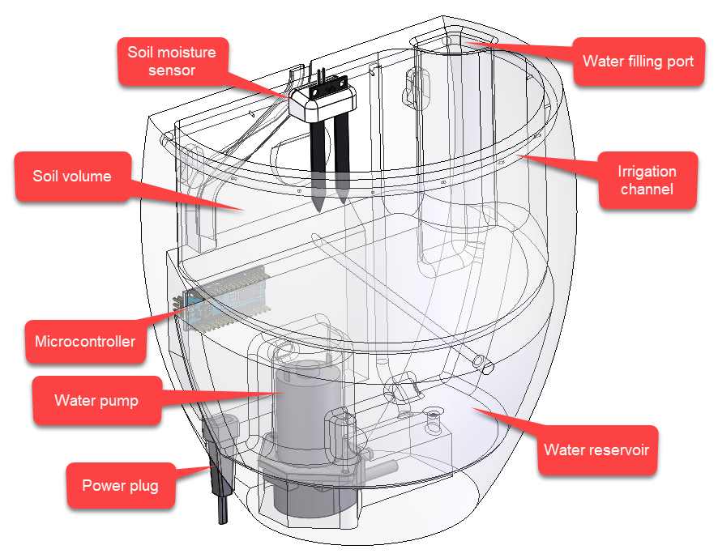
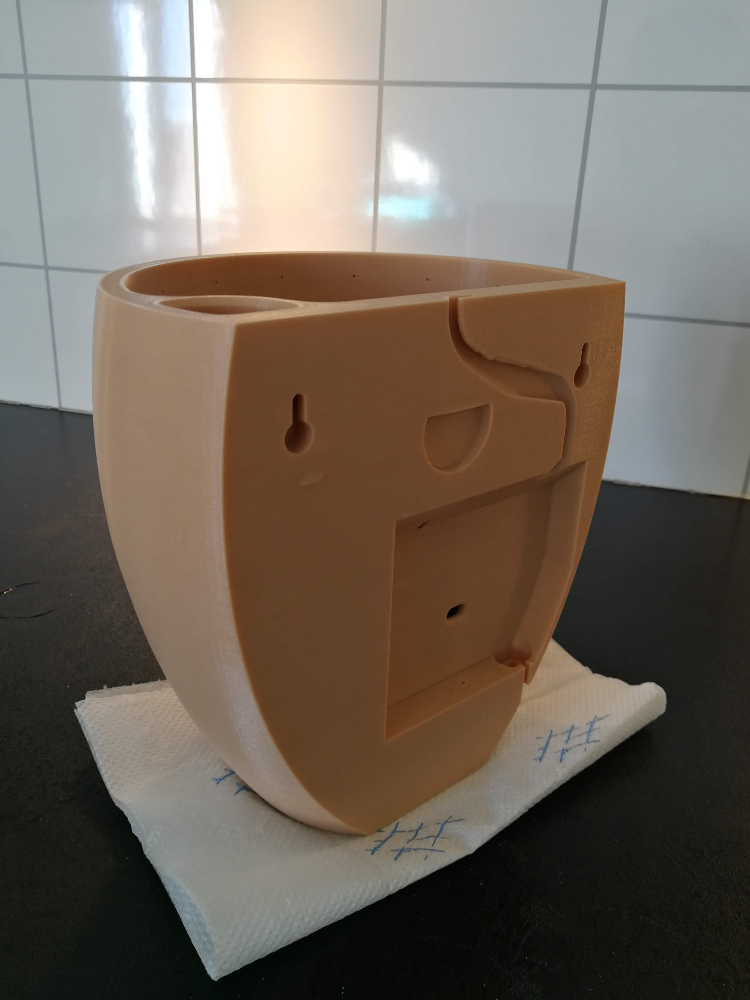
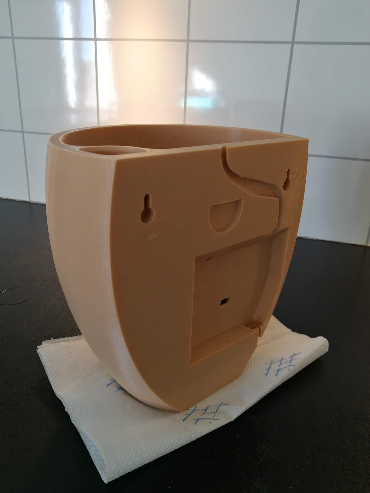
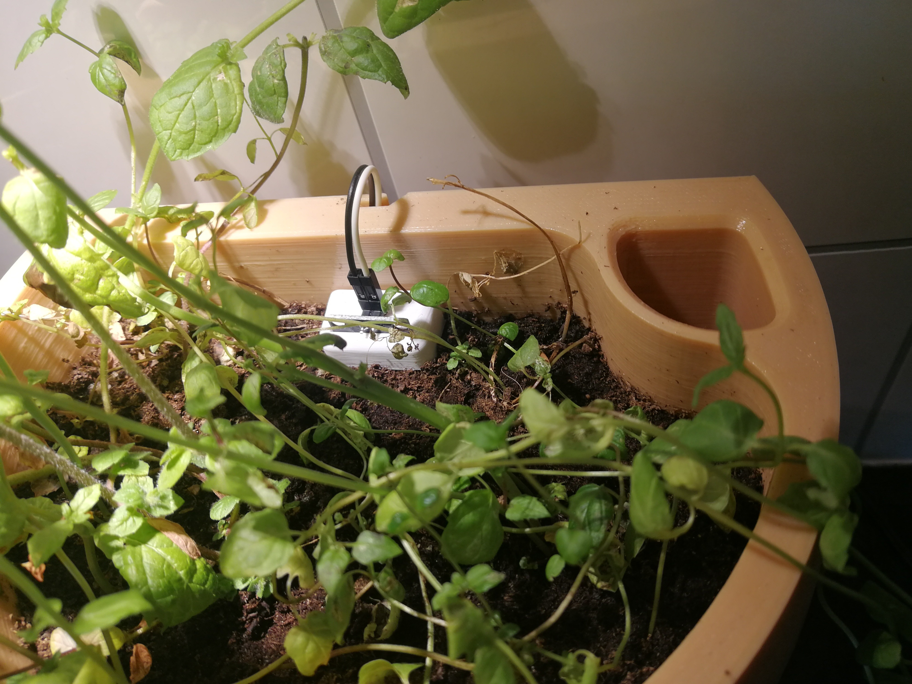
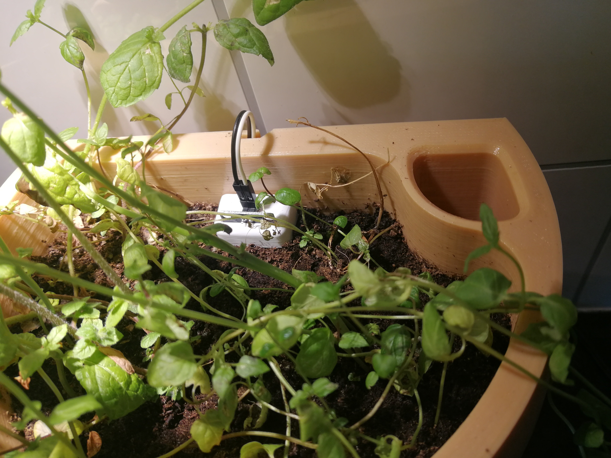

Self-watering planter
I made a self-watering planter. It uses a soil moisture sensor to sense when the plant needs water, then uses a pump to water the plant automatically.

The pot was 3D-printed, and I programmed an adruino microcontroller to controll the watering.
I learned that soil moisture sensors are very unreliable; no type of soil moisture sensor I tried worked (not even the capacitive sensor from Adafruit). Therefore the project was abandoned. Future versions must probably measure moisture indirectly with weighing cells etc.
 

 
